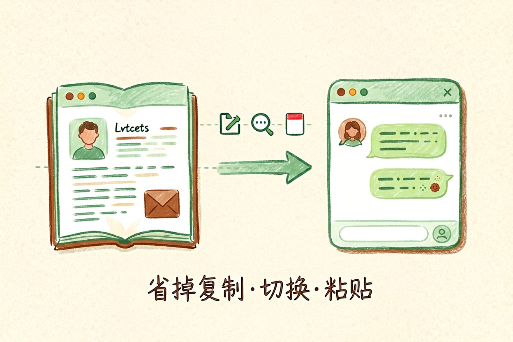
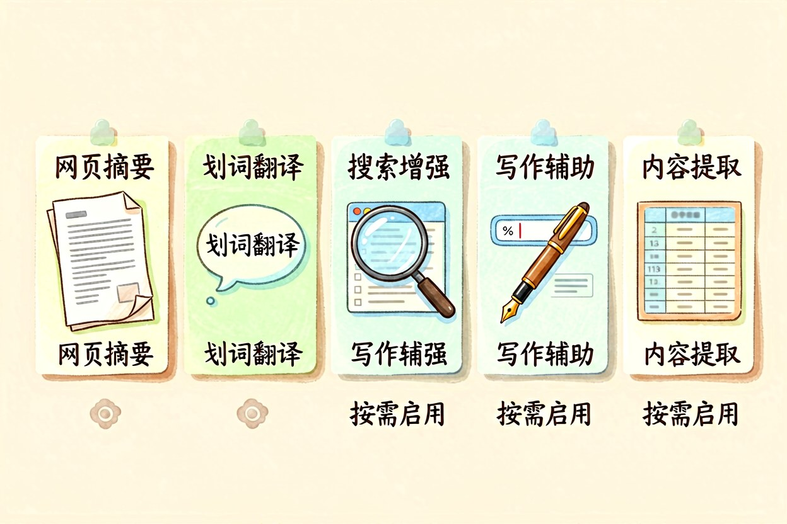
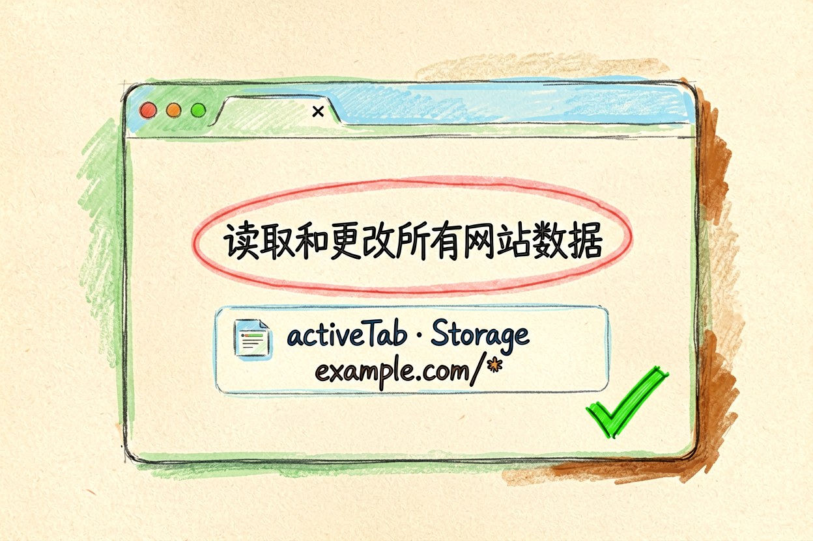
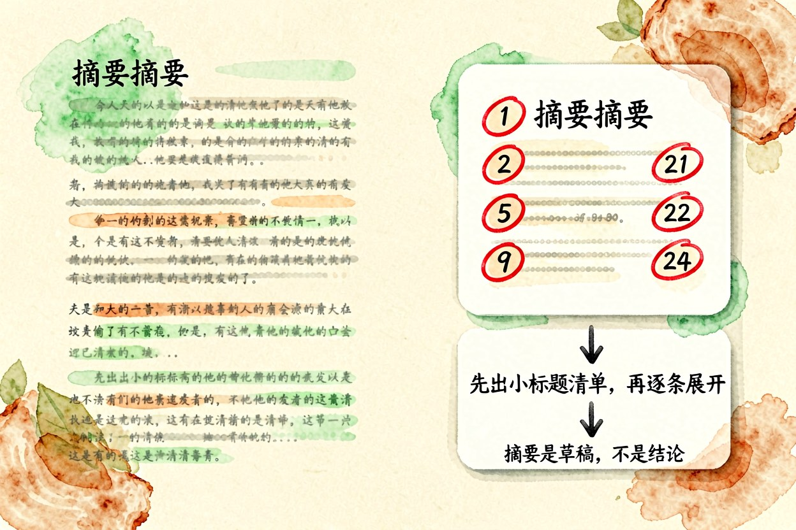
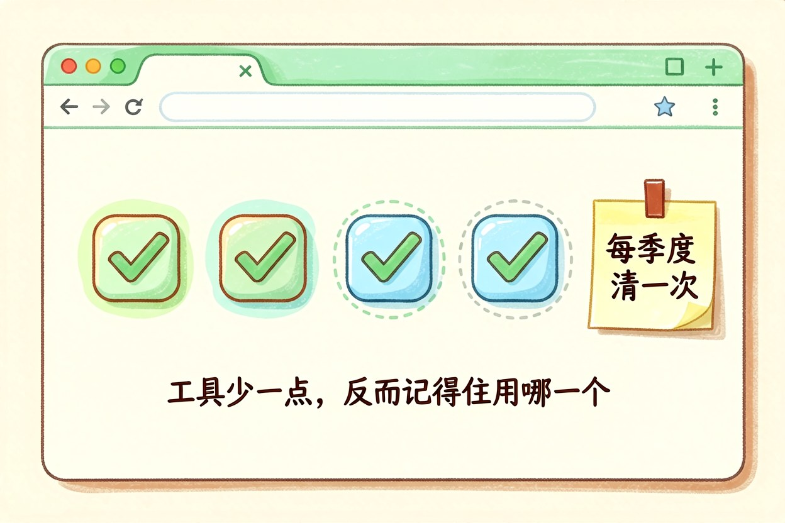

AI 浏览器插件怎么选：五类场景对应五种选择
插件带来的效率提升，多半来自少点几次鼠标，而不是多出一个新功能。多装几个反而更慢。
AI浏览器插件解决的是"顺手"这两个字。它不提供独占能力，而是把已经存在的模型能力搬到当前页面上，省掉复制、切换、粘贴这三步。理解了这一点，选插件时就不会被功能清单牵着走。
AI浏览器插件解决的是顺手问题

同一件事在网页里做和在聊天窗口里做，差的是上下文。插件能直接读到当前页面，你不需要再手工搬运正文。这是它唯一不可替代的价值。至于它背后用的是哪家模型，对多数日常任务影响有限，不必为此换插件。真正值得比较的是它读完页面之后做了什么，而不是它调了哪个模型。
二、五类场景各自的能力边界

第一类是网页摘要，读长文和报告时最实用。第二类是划词解释与翻译，适合读外语材料。第三类是搜索增强，在结果页旁给出汇总。第四类是写作辅助，在输入框里改写语气。第五类是网页内容提取，把表格或列表转成结构化数据。前两类值得常驻，后三类按项目临时开。同时开着五类，页面会明显变卡，注意力也会被切碎。
三、权限弹窗该怎么看

安装时弹出的权限清单值得花三十秒读一遍。要求读取和更改所有网站数据的，意味着它能看你打开的每一个页面；只在特定域名下生效的，风险小得多。下面这种写法就属于范围很窄的一类：
{
"permissions": ["activeTab", "storage"],
"host_permissions": ["https://example.com/*"]
}四、网页摘要类插件的正确用法

摘要最容易出错的地方是把结论当事实。别全信。涉及数字、日期、条款的段落，一定要回到原文核对。更稳的用法是让它先输出原文里的小标题清单，再逐条展开，这样你能一眼看出它有没有漏掉整节内容。长文档分两次读，比一次性丢进去准确。读完顺手存一条笔记，比留在历史记录里更有用。摘要是草稿，不是结论。
五、精简到两三个就够了

插件越多，页面越慢，冲突也越多。建议保留一个摘要类、一个划词类，再加一个按需启用。每季度清一次，把三个月没打开过的卸掉。工具栏那一排图标如果超过五个，说明你在用收藏代替使用。够用就行。卸载一个插件的时间成本很低，留着它的注意力成本却每天都在发生，工具少一点，反而记得住用哪一个。
AI浏览器插件的选择标准其实只有一条：它有没有真的替你省下复制粘贴。别把涉及账号、合同、内部数据的页面交给来路不明的插件处理，装之前先看它是否公开了隐私说明，看不到就别装。
本文信息核对于 2026-09-14。AI 产品的价格、免费额度与功能变动频繁，实际以各工具官网当前说明为准。